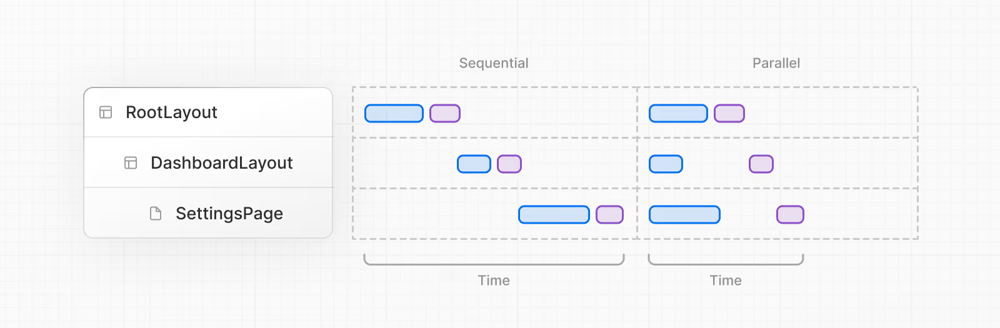

数据获取与缓存
本指南将引导您了解 Next.js 中数据获取和缓存的基础知识，并提供真实示例和最佳实践。
以下是 Next.js 中数据获取的最小示例：
| app/page.tsx |
|---|
| export default async function Page() {
let data = await fetch('https://api.vercel.app/blog')
let posts = await data.json()
return (
<ul>
{posts.map((post) => (
<li key={post.id}>{post.title}</li>
))}
</ul>
)
}
|
此示例演示了在异步 React 服务器组件中使用 fetch API 进行基本的服务端获取数据。
1. 参考
2. 示例
2.1 使用 fetch API 在服务器上获取数据
该组件将获取并显示博客文章列表，通过 fetch 获取的响应将被自动缓存。
| app/page.tsx |
|---|
| export default async function Page() {
let data = await fetch('https://api.vercel.app/blog')
let posts = await data.json()
return (
<ul>
{posts.map((post) => (
<li key={post.id}>{post.title}</li>
))}
</ul>
)
}
|
如果您在此路由中的其他任何地方都没有使用任何 动态API，则将在使用 next build 构建静态页面时进行预渲染，然后可以使用增量静态再生来更新数据。
如果您不想缓存 fetch 的响应，可以执行以下操作：
let data = await fetch('https://api.vercel.app/blog', { cache: 'no-store' })
2.2 使用 ORM 或数据库在服务端上获取数据
该组件将获取并显示博客文章列表，默认情况下不会缓存来自数据库的响应，但可以通过其他配置进行缓存。
| app/page.tsx |
|---|
| import { db, posts } from '@/lib/db';
export default async function Page() {
let allPosts = await db.select().from(posts)
return (
<ul>
{allPosts.map((post) => (
<li key={post.id}>{post.title}</li>
))}
</ul>
)
}
|
如果您在此路由中的其他任何地方都没有使用任何 动态API，则将在使用 next build 构建静态页面时进行预渲染，然后可以使用增量静态再生来更新数据。
要防止页面预渲染，您可以将以下内容添加到文件中：
export const dynamic = 'force-dynamic'
但是，通常会使用 cookie、headers 或从页面 props 读取传入的 searchParams 等功能，这将自动使得页面动态呈现。在这种情况下，我们不需要显式使用 force-dynamic。
2.3 在客户端获取数据
我们建议首先尝试在服务器端获取数据，然而在某些情况下，客户端数据获取仍然有意义。在这些场景中，您可以在 useEffect 中手动调用 fetch （不推荐），或者依靠社区中流行的 React 库（例如 SWR 或 React Query）进行客户端获取。
| app/page.tsx |
|---|
| 'use client';
import { useState, useEffect } from 'react';
export function Posts() {
const [posts, setPosts] = useState(null)
useEffect(() => {
async function fetchPosts() {
let res = await fetch('https://api.vercel.app/blog')
let data = await res.json()
setPosts(data)
}
fetchPosts()
}, [])
if (!posts) return <div>Loading...</div>
return (
<ul>
{posts.map((post) => (
<li key={post.id}>{post.title}</li>
))}
</ul>
)
}
|
2.4 使用 ORM 或数据库缓存数据
我们可以使用 unstable_cache API 来缓存响应，以允许在运行下一个构建时预渲染页面。
| app/page.tsx |
|---|
| import { unstable_cache } from 'next/cache';
import { db, posts } from '@/lib/db';
const getPosts = unstable_cache(
async () => {
return await db.select().from(posts)
},
['posts'],
{ revalidate: 3600, tags: ['posts'] }
);
export default async function Page() {
const allPosts = await getPosts();
return (
<ul>
{allPosts.map((post) => (
<li key={post.id}>{post.title}</li>
))}
</ul>
)
}
|
此示例将数据库查询结果缓存 1 小时（3600 秒），它还添加了缓存标签 posts，然后可以通过增量静态再生使其失效。
2.5 跨多个功能重用数据
在我们需要使用在页面中获取的相同数据的地方，Next.js 会使用 generateMetadata 和 generateStaticParams 等 API。如果您使用 fetch，请求会被自动记录。这意味着您可以使用相同的选项安全地访问相同的 URL，而只会发出一个请求。
| app/page.tsx |
|---|
| import { notFound } from 'next/navigation'
async function getPost(id) {
let res = await fetch(`https://api.vercel.app/blog/${id}`)
let post = await res.json()
if (!post) notFound()
return post
}
export async function generateStaticParams() {
let posts = await fetch('https://api.vercel.app/blog').then((res) =>
res.json()
)
return posts.map((post) => ({
id: post.id,
}))
}
export async function generateMetadata({ params }) {
let post = await getPost(params.id)
return {title: post.title}
}
export default async function Page({ params }) {
let post = await getPost(params.id)
return (
<article>
<h1>{post.title}</h1>
<p>{post.content}</p>
</article>
)
}
|
如果我们不使用 fetch，而是直接使用 ORM 或数据库，则可以使用 React cache 函数包装数据获取，这仅进行一次查询从来消除重复请求。
| import { cache } from 'react';
import { db, posts, eq } from '@/lib/db'; // Example with Drizzle ORM
import { notFound } from 'next/navigation';
export const getPost = cache(async (id) => {
const post = await db.query.posts.findFirst({
where: eq(posts.id, parseInt(id)),
})
if (!post) notFound()
return post
})
|
2.6 重新验证缓存数据
了解有关使用增量静态重新生成重新验证缓存数据的更多信息。
3. 模式
3.1 并行和顺序数据获取
在组件内部获取数据时，需要注意两种数据获取模式：并行和顺序。
- 顺序：组件树中的请求相互依赖，这可能会导致加载时间更长。
- 并行：路由中的请求是立即发起的，并且会同时加载数据，这减少了加载数据所需的总时间。

3.1.1 顺序数据获取
如果我们有嵌套组件，并且每个组件都获取自己的数据，如果未缓存这些数据请求，则数据获取将会按**顺序**发生。
在某些情况下，我们可能需要这种模式，因为本次提取是取决于另一次提取的结果。例如，只有在 Artist 组件完成获取数据后，Playlists 组件才会开始获取数据，因为 Playlists 组件依赖于 artistID 属性：
| app/artist/[username]/page.js |
|---|
| export default async function Page({ params: { username } }) {
// Get artist information
const artist = await getArtist(username)
return (
<>
<h1>{artist.name}</h1>
{/* Show fallback UI while the Playlists component is loading */}
<Suspense fallback={<div>Loading...</div>}>
{/* Pass the artist ID to the Playlists component */}
<Playlists artistID={artist.id} />
</Suspense>
</>
)
}
async function Playlists({ artistID }) {
// Use the artist ID to fetch playlists
const playlists = await getArtistPlaylists(artistID)
return (
<ul>
{playlists.map((playlist) => (
<li key={playlist.id}>{playlist.name}</li>
))}
</ul>
)
}
|
我们可以使用 loading.js（对于路由段）或React <Suspense>（对于嵌套组件）来显示即时加载状态，同时 React 在结果中流式传输。这将防止整个路由被数据请求阻塞，并且用户将能够与页面中准备好的部分内容进行交互。
3.1.2 并行数据获取
默认情况下，布局和页面段是并行呈现的，这意味着请求将会并行发起。但是，由于 async/await 的性质，同一段或组件内等待的请求将阻止其下方的任何请求。
想要并行获取数据，我们可以通过在使用数据的组件外部定义请求来快速发起请求。通过并行启动两个请求可以节省时间，但是在两个请求都得到解决之前，用户并不会看到渲染的结果。
在下面的示例中，getArtist 和 getAlbums 函数在 Page 组件外部定义，并使用 Promise.all 函数在组件内部启动：
| app/artist/[username]/page.js |
|---|
| import Albums from './albums'
async function getArtist(username) {
const res = await fetch(`https://api.example.com/artist/${username}`)
return res.json()
}
async function getAlbums(username) {
const res = await fetch(`https://api.example.com/artist/${username}/albums`)
return res.json()
}
export default async function Page({ params: { username } }) {
const artistData = getArtist(username)
const albumsData = getAlbums(username)
// Initiate both requests in parallel
const [artist, albums] = await Promise.all([artistData, albumsData])
return (
<>
<h1>{artist.name}</h1>
<Albums list={albums} />
</>
)
}
|
此外，您可以添加 Suspense 边界来分解渲染工作并尽快显示部分结果。
3.2 预加载数据
防止瀑布的另一种方法是通过创建一个实用程序函数来使用 预加载 模式，我们可以在阻塞请求之上快速地调用该函数。例如，checkIsAvailable() 会阻止 <Item/> 渲染，因此可以在其之前调用 preload() 来立即启动 <Item/> 数据依赖项。当 <Item/> 被渲染时，它的数据就已经被获取。
请注意，预加载函数不会阻止 checkIsAvailable() 运行。
! note "补充"
`preload`函数也可以有任何名称，因为它是一种模式，而不是 API。
3.2 将 React 缓存和仅服务器与预加载模式结合使用
我们可以结合 cache 方法、preload 模式和 server-only 包来创建可在整个应用程序中使用的数据获取实用程序。
| utils/get-item.js |
|---|
| import { cache } from 'react'
import 'server-only'
export const preload = (id) => {
void getItem(id)
}
export const getItem = cache(async (id) => {
// ...
})
|
通过这种方法，您可以即时地获取数据、缓存响应，并保证此数据获取仅发生在服务端上。布局、页面或其他组件可以使用 utils/get-item 导出的缓存函数来控制何时获取项目的数据。
! note "补充"
我们建议使用 `server-only` 包以确保服务端数据获取功能永远不会在客户端上使用。
3.3 防止敏感数据暴露给客户端
我们建议使用 React 的 taint API，taintObjectReference 和 taintUniqueValue，以防止将整个对象实例或敏感值传递给客户端。要在应用程序中启用脱敏功能，请将 Next.js 配置文件中的 experimental.taint 选项设置为 true：
| next.config.js |
|---|
| module.exports = {
experimental: {
taint: true,
},
}
|
然后将要脱敏的对象或值传递给 experimental_taintObjectReference 或 experimental_taintUniqueValue 函数：